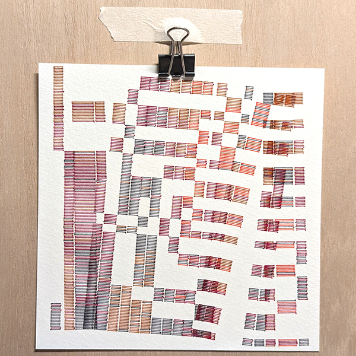
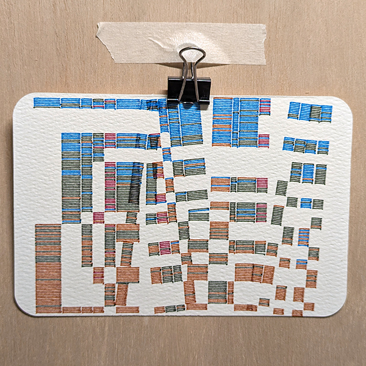
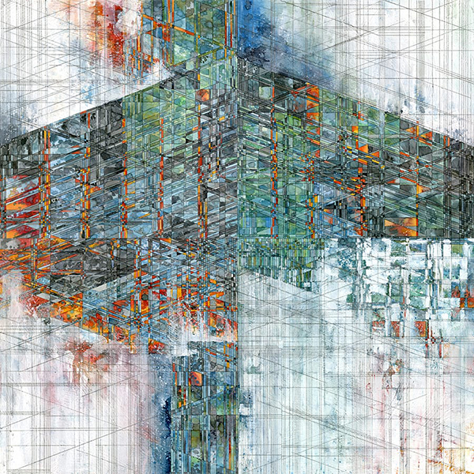
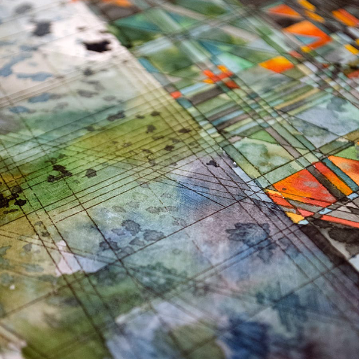

bent & broken 00

bent & broken 06
This piece started as a study of how to generate a sort of grid with a rhythm that changed over time. At first conception, I was thinking of ways to try to make grids similar in structure to some of the work of Jacob Van Loon's Arbor series, where sets of parallel lines at different spacings intersect at angles, and color blocks sometimes span between multiple cells. My final result obviously did not end up not much like this, but this was the original inspiration.

Jacob Van Loon's 8th and Main

Detail from 8th and Main
The approach I decided to pursue was to treat a column of the grid as a line of some width, and to model the intersections as divisions or breaks in the line. This created a conceptual structure where each line spanned from 0 to 1, and breaks in the line were added at two at a time at random positions in the interval of 0 to 1 (basically, just using the standard output of a random() function). When rendering the line, each time the position passed one of the break points, the drawing toggle would flip, so that the output would be a broken line. By adding and subtracting additional break points for each subsequent line, the drawn part of the line would invert at random locations, giving a sort if irregular grid pattern.
With this structure in place, I wanted to try out either slanting portions of the drawn line, or changing the angle the entire line is drawn at at random locations.
Color for each drawn line is determined by a probability function where selected colors are spaced evenly in the range from 0 to 1, and the chance of selecting a certain color is determined using 1 minus the distance to the color squared[^1] over the sum of the squared distances for all colors. For each subsequent line, there's a chance to add an accent color at a random location in the color stack, and/or to shuffle the order of the colors.
For plotting, the first versions of this were created for a fundraising event in my office [^2]. I made selected one version each of the slanted and rotated iterations, and developed some simple color pallettes using Stabilo 88 colored pens. These were then plotted on my LY Drawbot pen plotter on watercolor paper.
{^1] Actually, its the (1 - distance) to the 4th power, but thats too unwieldy to write out in the description. [^2] The fundraiser was themed around Napkin sketches, where participants could buy a 6 inch square piece of paper from the organizers, created whatever 'sketch' they wanted on the paper, then donate the artwork to the fundraiser. All the artworks were then entered into a silent auction for a week, and the proceeds donated to Philabundance, a local charity fighting hunger in our dear Philadelphia.